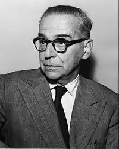
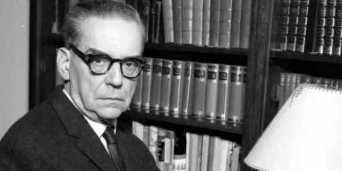
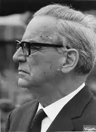

Андрич Іво (Andric, Ivo —10.10.1892, Травник, Боснія — 13.03.1975, Белград) — сербський письменник, лауреат Нобелівської премії 1961 p. Народився у сім'ї небагатого ремісника, майстра кавових млинків. Рано помер батько. У сім'ю прийшли злидні. Дитинство і юність Андрича пов'язані зі стародавніми містами Боснії — Травником, Вишеградом, Сараєвом. Сувора земля рідних місць, її кам'янисті і безлюдні стежки назавжди залишилися в пам'яті Андрича, він надзвичайно гостро відчував свою прив'язаність до рідного краю протягом усього свого життя.
У 1912 р. Андрич закінчив гімназію і вступив на філософський факультет університету в Загребі, згодом навчався у Відні, Кракові, Граці (Австрія).Юність Андрича співпала з піднесенням національно-патріотичного руху на Балканах. Андрич брав участь у діяльності молодіжної організації, яка боролася за визволення Балканії від австро-угорської залежності. Після замаху на австрійського спадкоємця престолу Франца Фердинанда, вчиненого Гаврилом Принципом, одним із його товаришів з організації "Молода Боснія", Андрич був заарештований австрійською владою і три роки (1914—1917) провів у в'язниці та на засланні.
У 1917 р. Андрич став одним із засновників літературного журналу "Літературний південь" ("Книжевни юг"), де опублікував свої перші вірші, статті та рецензії.Перші дві книги Андрича — збірки поезій у прозі "Ex Ponto" і "Неспокій" ("Nemiri") — вийшли у 1918 і 1920 pp., у них відображені роздуми молодого Андрича про призначення людини, про кохання і смерть, про страждання та життєву несправедливість. В цей же час Андрич підготував і згодом захистив докторську дисертацію на тему; "Розвиток духовного життя у Боснії під впливом турецького панування". 20—30-і роки — новий етап у творчості Андрича. Він пішов на дипломатичну службу, займав різноманітні пости у Бухаресті, Трієсті, Римі, Мадриді, Женеві та Берліні. Тривалий час перебуваючи далеко від батьківщини, Андрич не забував про рідну Боснію. Не залишав він і літературної діяльності. Основним жанром у творчості письменника міжвоєнного двадцятиліття стало оповідання. У 1924 р. вийшов друком перший том оповідань Андрича, а в 1936 р. — другий. Дія оповідань Андрича відбувається у Боснії в роки турецького панування й австрійської окупації, що прийшла йому на зміну у 1878 р. Андрич показав себе великим знавцем глибин людської душі, літописцем народної долі. В оповіданнях тих років майстерно відтворена атмосфера настороженості і страху, яка панує у поневоленій і завмерлій у своєму трагізмі Боснії. Скалічені людські долі, підневільна праця, голод, страждання стають темою оповідань Андрича ("Наложниця Мара", "Весілля", "Тривожний рік" та ін.). Багатолика вервечка майстерно виліплених характерів знаних міщан, австрійських чиновників, візирів, багатіїв і бідняків, представників міського "дна", християн і мусульман проходить перед читачем в оповіданнях цих років. Турецьке іго важким тягарем лягло на душі і долі людей. Релігійний фанатизм, забобони, глибока ворожнеча роз'єднали населення цього краю; "Хто в Сараєво нудиться в постелі без сну, той може почути голоси сараєвської ночі... Важко і впевнено б'є годинник на кафедральному соборі: друга година після опівночі; проходить більше хвилини (я лічив — рівно сімдесят п'ять секунд), і тоді відгукується голос — тихше, але проникливіше — годинника на православній церкві і б'є свої дві години після опівночі. Трохи пізніше лунає далекий, глухий бій годинника на вежі мусульманської мечеті; вони б'ють одинадцять годин, примарних турецьких годин за загадковим відліком далеких чужих країв! У євреїв немає свого годинника, і один Бог знає, котра зараз за сефардським відліком часу, а котра — за ешкеназьким. Так навіть вночі, глухої пори, коли всі сплять, у бої годинників наявна відмінність, яка ділить цих занурених у сон людей, котрі, прокинувшись, радіють і сумують, постяться і святкують за чотирма різними, ворогуючими поміж собою календарями, возносячи свої бажання і молитви одному небу чотирма різними мовами. Ця відмінність, то відкрита, то явна, то прихована і глуха, схожа на ненависть, а часто тотожна їй", — так передає Андрич атмосферу роз'єднаності людей, наповнюючи тривожним відчуттям катастрофічності картини життя рідного краю. Андрич широко використовує легенди і перекази, розглядаючи їх як життєво достовірні свідоцтва минулого. Симпатії Андрича на боці тих, хто страждає, хто залишається людиною за будь-яких обставин, якими б безмежно важкими вони не були. У 30-х pp. Андрича обрали дійсним членом Сербської академії наук, Югославської академії наук і мистецтв в Загребі та Словенської академії наук і мистецтв.Друга світова війна застала Андрича за межами Югославії. Він залишив службу і повернувся на батьківщину, усю війну перебувши в окупованому Белграді, жив самотою, відмовився співпрацювати з окупантами, не публікувався, багато працював. У 1945 р. після тривалої перерви з'явилися його романи "Травницька хроніка" ("Travnicкa сhrоnіка", 1942), "Міст на Дрині" ("Na Drini cuprija"), "Панночка" ("Gospodjica"). Дивує постійність Андрича: від першого оповідання, опублікованого в 1919 p., і до романів, створених у найтрагічніші роки фашистської окупації, наскрізною темою його творчості залишається історія Боснії. Романи Андрича є яскравою сторінкою у розвитку югославської прози. У "Травницькій хроніці" події відбуваються у 1806—1814 pp., у "місті візирів" Травнику. Це період наполеонівських війн, коли глуха турецька провінція вперше стала ареною зіткнення політичних інтересів європейських держав. Могильний спокій поневоленої Боснії порушений — сюди приїхали іноземні консули. Звичний порядок речей зламаний. Автор розкриває характерні особливості травницького середовища: взаємостосунки національних і релігійних груп населення, їхнє ставлення до близьких змін. Роман задуманий як широкий аналіз стану боснійського суспільства на крутозламі історії. Пролог та епілог обрамляють хроніку про консульські часи. Спочатку йдеться про те, як у кав'ярні, де збираються травницькі бечі та шановані люди, з тривогою обговорюється прибуття консулів; потім, через сім років, ті самі люди, на тих самих витертих, покривлених від старості кам'яних лавках радіють закриттю консульств. Але неспокійні часи не минулися безслідно, назрівають нові події, травницьке життя лише ззовні повертається у стару колію. Другий роман Андрича — "Міст на Дрині" охоплює життя Боснії протягом декількох віків — з 1566 по 1914 pp. Вишеградський міст через Дрину є безумовним і незмінним свідком трагічних подій боснійської історії. Мотив мосту — один із наполегливо повторюваних мотивів, він прозвучав в оповіданні "Історія мосту" (1926), в ліричному есе "Мости" (1913). У різні роки "міст" поставав перед письменником у різних аспектах, але найзагальніший смисл цього символу — людське єднання, зближення між людьми та країнами, зв'язок між минулим народу та його теперішнім. Романи Андрича "Травницька хроніка" та "Міст на Дрині" засвідчили появу нової жанрової структури в історії літератури Югославії XX ст. Використовуючи традиційну історичну тему, Андрич створив новий тип історичного роману з високим філософським потенціалом. Третій роман Андрича — "Панночка" присвячений темі збагачення. Головна героїня — лихварка Райка Радакович, на прізвисько Панночка, присвятила своє життя одній-єдиній меті — зібрати "золотий мільйон". Пристрасть до грошей поглинула всі інші почуття та прагнення героїні. Блискуче відтворена в романі психологія людини-власника. Життя Панночки зображене на фоні історичних подій в Югославії першої третини XX ст.Повоєнне десятиліття — плідний період громадської і письменницької біографії Андрича. Він — один із засновників Союзу письменників колишньої Югославії і перший його голова. Продовжувалася його творча діяльність. Найкращим з-поміж створеного в останні роки є історико-філософська повість "Проклятий двір" ("Proideta avlija", 1954) і новели "Дім на околиці", опубліковані посмертно, у 1976 р. "Проклятим двором" названа стамбульська в'язниця, де перебувають в'язні з різних країв великої Оттоманської імперії. Серед в'язнів опиняється мрійник, учений, неперевершений знавець історії Чаміл. Доля його трагічна. Перу Андрича належать також значні літературно-критичні праці (про П. Негоша, В. Караджича, художника Ф. Гойю та ін.).У 1961 р. Андричу була присуджена Нобелівська премія. У промові, виголошеній письменником на урочистій церемонії з нагоди вручення йому високої нагороди, прозвучали такі слова: "Тільки-но народившись, людина виявляється кинутою в океан буття. Потрібно пливти. Існувати. Бути вірним собі. Витримати атмосферний тиск навколишнього, всі зіткнення, свої та чужі непередбачені та непередбачувані вчинки, які часто перевищують міру наших сил. І більше того — витримати і свої думки про все це. Одним словом — бути людиною!" Ці слова звучать сьогодні як формула людської етики, як заповіт великого майстра, залишений своїм живим сучасникам.